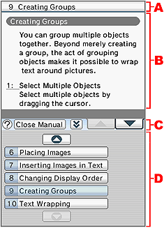
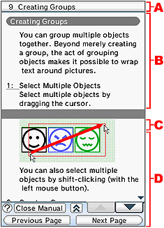
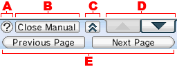
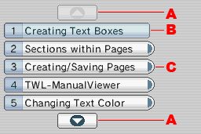
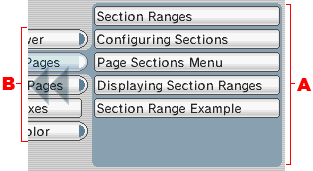

TWL-ManualViewer
作成したニンテンドーDSiウェア 電子取扱説明書をプレビューすると、TWL-ManualViewerによって実機上に表示されます。
ビューアでは、下画面操作する事で各ページを表示します。
※作成された説明書は、ページのファイル名の順番に従ってビューアのボタンに自動的に割り当てられます。
ページの順番を入れ替える時は、ファイル名を変更して、並び順を変更する必要があります。
TWL-ManualViewerの画面
プレビュー時に実機上で表示されるのがTWL-ManualViewerの画面です。
目次画面のデザインは固定ですが、ページタイトルとページ内項目のボタンの文言はエディタで編集します。
| 目次が表示されている |
目次が閉じられている |
|
|

|

|
- ページタイトル。
ページのタイトルはエディタのページ設定で設定する事ができます。
- 説明書本文。
ニンテンドーDSiウェア 電子取扱説明書の本文です。
１画面に入りきらないページは、スクロールさせることが出来ます。
また、目次を閉じて上下画面を繋げて表示する事も可能です。
- ツールバー。
ビューアのツールバーです。
- 目次。
目次は自動的に設定されます。
目次には、ページタイトルボタンとページ内項目ボタンがあります。
目次は目次開閉ボタンで閉じることが出来ます。
※ページタイトル、目次、共に１００を超えるページ数はビューアの仕様上、三桁のページ数が正しく表示されませんので、ニンテンドーDSiウェア 電子取扱説明書のページ数は９９ページ以内で制作してください。 |
TWL-ManualViewerの操作方法
ツールバー
|

|
- ヒントボタン。
ビューアの使い方ページを開きます。
- 説明書を閉じるボタン。
ニンテンドーDSiウェア 電子取扱説明書を終了します。
- 目次開閉ボタン。
目次を開閉します。
- スクロールボタン。
１画面に納まらないページを上下にスクロールします。
- ページ送り戻しボタン。
目次を閉じた時のみ有効
説明書の次のページや前のページを表示します。
|
目次画面
| ページタイトルの目次画面 |
- ページ送り、戻し。
ページボタンを切り替えます。
- ページボタン（ページ内項目なし）。
ページタイトルが表示されています。
ページ内項目を設定していない説明書ページを表示します。
- ページボタン（ページ内項目あり）。
ページタイトルが表示されています。
ページ内項目を設定している説明書ページを表示し、ページ内項目目次に切り替えます。
|
|

|
| ページ内項目の目次画面 |
ページ内項目設定は、テキストオブジェクトで行います。
ページ内項目があるページを選択すると、ページ内項目目次が表示されます。
※ページ内項目は、１ページ最大７個までしか設定できません、８個め以降は無効となります。
- ページ内項目ボタン。
ページ内項目を、ボタン化して表示します。
- ページボタン。
ページ内項目目次に移る前のページボタンの右端が見えています、このエリアをタッチする事でページ内項目目次から戻ることが出来ます。
|
|

|